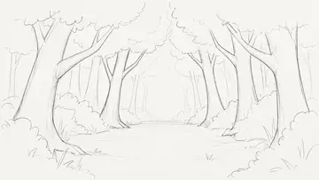

Nature Seed Teken een pad. Breng ze samen.
Een gratis tekenpuzzel met natuurkunde die je in je browser speelt. Teken een lijn met beperkte inkt en die wordt een helling, brug of opvangpunt dat Water Drop naar Seed brengt. Elk opgelost niveau brengt een aquarelbos weer tot leven.
Uitgebracht op 18 september 2026 met 100 niveaus, sterren voor lijnefficiëntie en opgeslagen voortgang. Het is gratis op itch.io, Game Jolt en indiexpo; de iOS- en Android-versie is het doel en staat nog niet in de appstores.
Tekenenteken met beperkte inkt
Verbindenbreng Water Drop naar Seed
Bloeibreng het bos terug
Binnen de huidige build
Wat je tekent wordt onderdeel van het niveau.
Elke streek die je vastlegt wordt een vast voorwerp met echte botsingen, en Water Drop en Seed reageren erop. Inkt en aantal lijnen zijn allebei beperkt, dus de vorm van de lijn doet ertoe.
Releasestatus Uitgebracht op 18 september 2026

Speloverzicht
Een ontspannende tekenpuzzel om twee kleine personages bij elkaar te brengen.
Het idee
Teken een pad, breng Water Drop en Seed bij elkaar en zie hoe de stille schets weer tot leven komt.
Launch-build
100 speelbare niveaus met tekenen met aanraking, sterren voor lijnefficiëntie en voortgang die tussen sessies wordt opgeslagen.
Publiek
Spelers die houden van rustige puzzels, lichte natuurkunde, natuurthema's en stressvrije mobiele sessies.
Status
Uitgebracht op 18 september 2026 en gratis te spelen in je browser. Een mobiele versie is het doel; die staat nog niet in de appstores.
Functies
Wat je doet in Nature Seed.
Fysieke paden tekenen om op te lossen
Elke puzzel begint met terrein, Seed en Water Drop. De streek van de speler wordt de helling, brug of het opvangpunt dat ze verbindt.
Duidelijke natuurkundefeedback
Water Drop en Seed bewegen zich op een manier die je kunt volgen, zodat een mislukte poging laat zien wat je moet veranderen.
Beloningen voor bosherstel
Rond een niveau af en de geschetste scène vult zich met kleur en groeiende bomen.
Korte niveaus, tekenen met aanraking
De niveaus zijn kort en je tekent met aanraking, wat goed past bij snelle sessies op een telefoon.
Gameplay-loop
Zo speel je Nature Seed
- Stap 01Lees de schets
Zoek naar hellingen, gaten en blokkades, en naar de veiligste manier om beide personages te verbinden.
- Stap 02Teken de lijn
Teken je lijn. De streek wordt een helling, geleider of opvangpunt voor de personages.
- Stap 03Bevestigen en observeren
Leg de lijn vast en kijk hoe de personages reageren. Je ziet wat werkte en wat niet.
- Stap 04Bloeien of verfijnen
Als Water Drop Seed bereikt, komt het bos terug. Missen ze elkaar, teken dan opnieuw met wat je net hebt geleerd.
Verhaal / wereld
Een geschetst bos wacht op water.
Nature Seed begon als tekenpuzzel met natuurkunde over het herstellen van iets kwetsbaars, in plaats van voorwerpen tegen elkaar aan te duwen.
De hoofdrolspelers zijn Seed, Water Drop en een bos dat tijdens het spelen van schets weer in kleur verandert. Elke puzzel is een klein klusje: bestudeer het land, teken een pad en help het water iets te bereiken dat kan groeien.
- Ontwerprichting
- Rustige fysica en zichtbaar herstel
- Personages
- Water Drop en Seed
- Interactie
- Tekenen met aanraking
- Beloning voor meesterschap
- Een oplossing met één regel levert drie sterren op
In één oogopslag
Vandaag gratis in de browser, met mobiel als doel.
Je krijgt beperkte inkt en een beperkt aantal lijnen. Gebruik ze om Water Drop naar Seed te brengen, speel het niveau daarna opnieuw en kort je oplossing in tot één lijn voor drie sterren.
- Genre
- Tekenpuzzel met natuurkunde
- Platformdoel
- iOS/Android
- Sessievorm
- Korte kalme niveaus
Materialen downloaden
Nature Seed pers- en makermaterialen
WebP-voorbeelden voor persberichtgeving, beoordeling door uitgevers en referenties voor storepagina's. Bronbestanden in volledige resolutie zijn op aanvraag beschikbaar.
Merk en karakters
 Water DropHet blauwe personage dat Seed moet bereiken.
Water DropHet blauwe personage dat Seed moet bereiken.
 Seed-personageHet groene personage dat Water Drop probeert te bereiken.
Seed-personageHet groene personage dat Water Drop probeert te bereiken.
 BoomgroeiDe boom die groeit na het oplossen.
BoomgroeiDe boom die groeit na het oplossen.
 BosmenuAchtergrond van het hoofdmenu.
BosmenuAchtergrond van het hoofdmenu.
 Gameplay-achtergrondNiveauachtergrond met een leeg speelveld.
Gameplay-achtergrondNiveauachtergrond met een leeg speelveld.
Schetsniveaus tekenen om op te lossen
Schetsniveau 01Schets vóór de oplossing.
 Schetsniveau 02Schets vóór de oplossing.
Schetsniveau 02Schets vóór de oplossing.
 Schetsniveau 03Schets vóór de oplossing.
Schetsniveau 03Schets vóór de oplossing.
 Schetsniveau 04Schets vóór de oplossing.
Schetsniveau 04Schets vóór de oplossing.
 Schetsniveau 05Schets vóór de oplossing.
Schetsniveau 05Schets vóór de oplossing.
 Schetsniveau 06Schets vóór de oplossing.
Schetsniveau 06Schets vóór de oplossing.
 Schetsniveau 07Schets vóór de oplossing.
Schetsniveau 07Schets vóór de oplossing.
 Schetsniveau 08Schets vóór de oplossing.
Schetsniveau 08Schets vóór de oplossing.
 Schetsniveau 09Schets vóór de oplossing.
Schetsniveau 09Schets vóór de oplossing.
 Schetsniveau 10Schets vóór de oplossing.
Schetsniveau 10Schets vóór de oplossing.

 Schetsniveau 02Schets vóór de oplossing.
Schetsniveau 02Schets vóór de oplossing.
 Schetsniveau 03Schets vóór de oplossing.
Schetsniveau 03Schets vóór de oplossing.
 Schetsniveau 04Schets vóór de oplossing.
Schetsniveau 04Schets vóór de oplossing.
 Schetsniveau 05Schets vóór de oplossing.
Schetsniveau 05Schets vóór de oplossing.
 Schetsniveau 06Schets vóór de oplossing.
Schetsniveau 06Schets vóór de oplossing.
 Schetsniveau 07Schets vóór de oplossing.
Schetsniveau 07Schets vóór de oplossing.
 Schetsniveau 08Schets vóór de oplossing.
Schetsniveau 08Schets vóór de oplossing.
 Schetsniveau 09Schets vóór de oplossing.
Schetsniveau 09Schets vóór de oplossing.
 Schetsniveau 10Schets vóór de oplossing.
Schetsniveau 10Schets vóór de oplossing.
Herstelde puzzelscènes
 Niveau 01 hersteldHersteld na het oplossen.
Niveau 01 hersteldHersteld na het oplossen.
 Niveau 02 hersteldHersteld na het oplossen.
Niveau 02 hersteldHersteld na het oplossen.
 Niveau 03 hersteldHersteld na het oplossen.
Niveau 03 hersteldHersteld na het oplossen.
 Niveau 04 hersteldHersteld na het oplossen.
Niveau 04 hersteldHersteld na het oplossen.
 Niveau 05 hersteldHersteld na het oplossen.
Niveau 05 hersteldHersteld na het oplossen.
 Niveau 06 hersteldHersteld na het oplossen.
Niveau 06 hersteldHersteld na het oplossen.
 Niveau 07 hersteldHersteld na het oplossen.
Niveau 07 hersteldHersteld na het oplossen.
 Niveau 08 hersteldHersteld na het oplossen.
Niveau 08 hersteldHersteld na het oplossen.
 Niveau 09 hersteldHersteld na het oplossen.
Niveau 09 hersteldHersteld na het oplossen.
 Niveau 10 hersteldHersteld na het oplossen.
Niveau 10 hersteldHersteld na het oplossen.
Ontwikkelingstijdlijn
Ontwikkelingstijdlijn van Nature Seed
- Zomer 2025Origineel concept
Nature Seed begon als idee voor een rustige mobiele puzzel over verbondenheid en het herstellen van de natuur.
- oktober 2025Identiteit van Seed en Water Drop
We rondden het ontwerpdocument af en kozen Seed en Water Drop als hoofdpersonages.
- december 2025Ontwikkeling begint
We planden de eerste niveaus op papier, begonnen toen met bouwen en de kernsystemen werden speelbaar.
- februari 2026Grote ronde conceptniveaus
Een grote, ruwe eerste ronde over de niveaus gaf ons een basis voor latere afwerking en balancing.
- maart-april 2026Mechanica en niveaubeoordeling
We bekeken extra mechanieken en conceptniveaus en vereenvoudigden of herwerkten ze om het spel rustig te houden.
- juli 2026Verticale prototyperonde
De juli-build bracht tekenen met beperkte inkt, efficiëntiesterren, opgeslagen voortgang en stabiele lijngeneratie samen in één speelbare lus.
- 18 september 2026Nature Seed-release
Het spel verscheen als Nature Seed met 100 niveaus, sterren voor lijnefficiëntie, opgeslagen voortgang en aquarelherstelscènes.
Veelgestelde vragen over Nature Seed
Veelgestelde vragen over Nature Seed
Is Nature Seed gratis?
Ja. Je kunt het gratis in je browser spelen op itch.io, Game Jolt en indiexpo.
Is Nature Seed al uit?
Ja. Het is uitgebracht op 18 september 2026 met 100 niveaus. De iOS- en Android-versie is het doelplatform en staat nog niet in de appstores.
Wat voor spel is Nature Seed?
Een ontspannende tekenpuzzel met natuurkunde. De lijnen die je tekent worden stevige voorwerpen die Water Drop en Seed helpen elkaar te vinden.
Hoe speel je Nature Seed?
Lees het terrein, teken een route met je beperkte inkt en kijk hoe beide personages reageren. Missen ze elkaar, teken dan opnieuw. Met minder lijnen verdien je meer sterren, en met één lijn krijg je er drie.
Wie maakt Nature Seed?
WillowinWorlds, een onafhankelijke studio die mobiele puzzel- en arcadespellen maakt.
Mag ik het persmateriaal van Nature Seed gebruiken?
Ja, voor pers, beoordeling door uitgevers en storereferenties. Bronbestanden blijven privé tenzij u ons erom vraagt.
Nature Seed Devlog
Wat is er veranderd en wanneer
- Nature Seed-release
Nature Seed verscheen onder zijn definitieve titel als gratis browserspel op itch.io, Game Jolt en indiexpo, met 100 niveaus, sterren voor lijnefficiëntie en opgeslagen voortgang.
- Niveau 2 restauratie en stabiliteitspas
Niveau 2 gebruikt nu het productieachtergrondpaar, met betrouwbaardere niveau-instellingen, botsingscontroles en voltooiingsfeedback.
- juli 2026Speelbare build
De juli-build combineerde lijnen tekenen met beperkte inkt, efficiëntiesterren, opgeslagen voortgang en herstelfeedback.
- april 2026Herwerkingsronde voor niveaus
Na een interne review hebben we meerdere conceptniveaus herwerkt om de complexiteit te verlagen en ze op een telefoon makkelijker leesbaar te maken.
- maart 2026Mechanica review
We testten extra mechanieken en haalden de mechanieken weg waardoor de niveaus druk aanvoelden.
- februari 2026Grote ronde conceptniveaus
Een grote, ruwe eerste ronde over de niveaus werd de basis voor latere afwerking en balancing.
- december 2025Ontwikkeling begint
De kernsystemen zijn van het ontwerpdocument omgezet naar een speelbare vorm.
- Zomer 2025Origineel concept
De eerste versie van Nature Seed was een rustig puzzelidee over verbondenheid en het herstellen van de natuur.